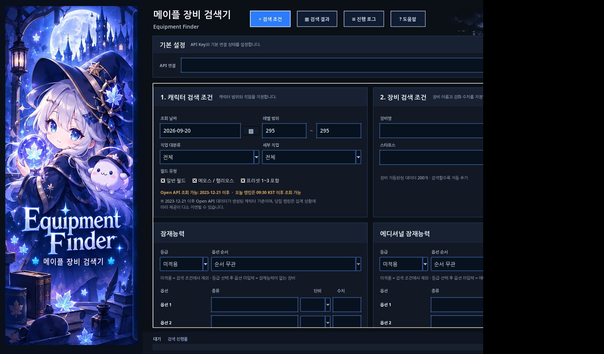
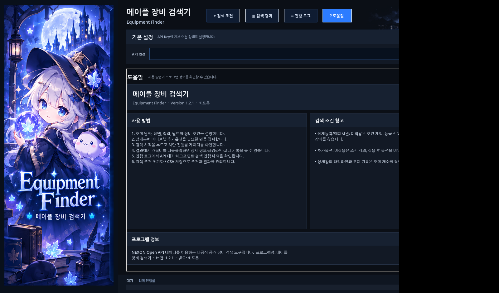

⌕
EQUIPMENT SEARCH
장비 조건 검색
레벨·직업·월드·장비명·스타포스와 잠재/에디/추가옵션을 조합해 원하는 캐릭터를 찾습니다.
레벨·직업·월드부터 장비명, 스타포스, 잠재능력, 에디셔널 잠재능력, 추가옵션까지 조합해 공개 장비 정보를 검색합니다. 결과 상세창에서는 캐릭터 타임라인과 기간별 코디 기록도 확인할 수 있습니다.

필요한 조건만 입력하는 방식으로 검색하고, 결과에서 상세 기록까지 이어서 확인할 수 있습니다.
레벨·직업·월드·장비명·스타포스와 잠재/에디/추가옵션을 조합해 원하는 캐릭터를 찾습니다.
잠재와 에디셔널은 등급·옵션 순서·단위·수치를 지정하고, 추가옵션은 정확히 같은 값 기준으로 검색합니다.
429 대기와 장시간 검색 상황을 고려해 진행상태를 저장하고, 중단된 작업을 이어서 처리할 수 있습니다.
레벨 달성, 닉네임·길드·월드·성별 변화 이력을 날짜 순서로 확인하고 원하는 이력 개수를 지정할 수 있습니다.
시작일·종료일과 코디 변화 개수를 정해 기간 안의 코디 변화를 날짜별로 확인합니다.
검색 결과를 화면에서 비교하고 캐릭터 상세창을 열거나, 현재 결과를 CSV 파일로 저장할 수 있습니다.
프로그램과 홈페이지를 같은 블루 판타지 톤으로 맞췄습니다.
한 화면에서 캐릭터·장비·잠재·추가옵션·고급 설정을 관리하고, 하단 고정 게이지에서 진행률을 확인합니다.

별도 창이나 스크롤 없이 메인 탭 한 화면에서 사용법과 프로그램 정보를 확인합니다.
실제 검색은 로컬 Windows 프로그램에서 실행됩니다. 홈페이지는 API Key를 입력받지 않습니다.
정식 배포판은 사용자가 발급받은 NEXON Open API Key를 입력해 사용합니다.
정식 ZIP 파일을 내려받아 원하는 폴더에 압축을 풉니다.
실행 파일을 열고 NEXON Open API Key를 입력합니다.
조회일·레벨·직업·장비와 필요한 옵션만 설정합니다.
검색을 시작하고 결과 더블클릭으로 타임라인과 코디 기록을 확인합니다.
검색 기능을 유지하면서 UI와 상세 기록, 도움말, 진행률 표시를 하나의 완성된 흐름으로 정리했습니다.